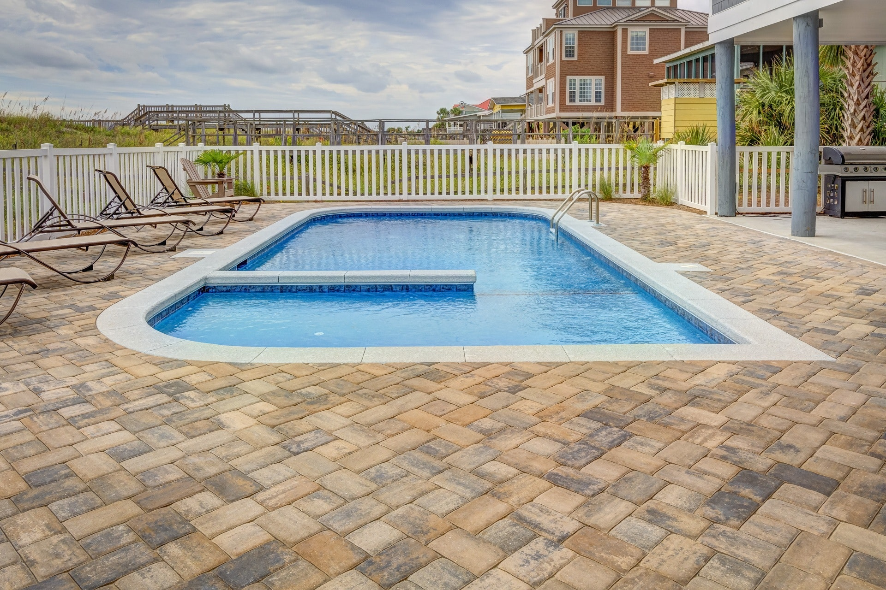

Our team was recently tasked with a complete pool cleaning and maintenance project for a residential pool. We started by draining the pool and removing debris, then cleaned the tiles and grout lines with specialized tools. After refilling the pool, we balanced the pH levels and added necessary chemicals to ensure the water was clean and safe for swimming.

We were hired by a commercial property to power wash the outside tiles around their pool and perform deck maintenance. Our team used high-pressure washers to blast away dirt, grime, and algae buildup on the tiles, making them look like new.

A residential client contacted us for filter cleaning and repair after noticing reduced water flow in their pool. We dismantled and deep cleaned the filter, replaced damaged parts, and installed a new pressure gauge. Our team also provided advice on maintaining the filter to ensure it functions efficiently and prevents future issues.